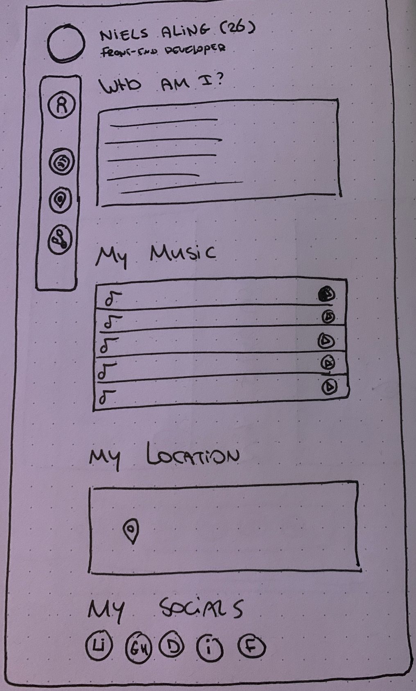

Design
For this design I wanted to create a sidebar to navigate to the items of the onepager.
On the top of the page will be a picture/avatar of me with my name, age and profession next to it.
On the page I will have 4 sections: Who am I?, My Music, My Location and Socials.
All the socials have their own logo that I will use as icon in the side bar, but I also needed general icon for the socials.
Therefore I made some sketches of icons that could represent the socials.


Breakdown
To make sure I have a clear understanding of what I need to do, I made a breakdown of the website.
The navigation bar will be on the left side of the page, but to make sure it's still semantic it will be in de header of the website.
The header will also contain the avatar and the name, age and profession.
In the main section of the website I will have 4 sections: Who am I?, My Music, My Location and Socials.

Node.js, Express & EJS
To make my website dynamic I needed to create a server with Node.js.
I use Node.js to create a server, Express to handle the routes and EJS to render the views.
What is Node.js?
Node.js is an open-source and cross-platform JavaScript runtime environment.
It's used to execute JavaScript code server-side. With node.js you can generate dynamic content, make a connection to a database,
collect form data and add, delete, modify data in your database.
What is Express?
What is EJS?